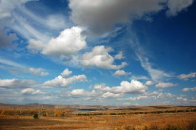

What is a love?May be a bird.Singer a songAt win over heart …
Mixed in my mind,Take in my heartaway…Again and again.
Между мной и тобой небо,Половинка моей жизни.Где бы ты, мой родной, не был,Возвращайся в мою пристань.Аа-а-а-а а-а-а а-а-а а-а
If I were youI would always love me soIf I were you
Så let det er i natså let som du gør mig lige nukloden svæver ud af kurssom et mælkebøttefnug
Got my keys got my coat got my shoes onGot my phone got my bag got my nails onYou're here,you're here but I'm still aloneI say goodbye to your shadow
Silloin luulit et tää on The EndMut ei ollut sun aika tulla osaksi virtaaPäivä taittui eteenpäin, mut se takaraivoon jäi
Believe me, I just don’t careIf you look away or stare,If you choose to go or stayDon’t believe me, I pray!
Here I go out to sea againThe sunshine fills my hairAnd dreams hang in the airGulls in the sky and in my blue eyeYou know it feels unfair
Ой, у вишневому саду, там соловейко щебетав.Додому я просилася, а ти мене все не пускав.Додому я просилася, а ти мене все не пускав.
Дурсаад сэтгэл дэнсэлдэгДуулаад ирдэг дээ найз миньДуниартсан их говийгТуулаад ирдэг дээ найз минь
Hey youCan I learn your flavour?It's brand newNow it's in the papersAll I seem to seeMust be something underneath
What we gonna do right here is go backWay back. Back into time
No baby no baby no babyNo, no, no
Son las cinco de la mañana y yo no he dormido nadaPensando en tu belleza en loco voy a pararEl insomnio es mi castigo, tu amor será mi alivio
She is like the lady down the roadOr just the woman up the street,Like any mother you may know.
Flaca no me clavestus puñalespor la espaldatan profundono me duelenno me hacen malLejosen el centrode la tierra
На-ра на-на на-а. На-ра на-нааа.Красивый мужчина.Красивый мужчина.Красивый мужчина.Красивый мужчина.
Харах нудэнд минь оч гялалзахадХайрын толиноос чи минь мишээнэХонгор бусгуй чамайг хараадХорвоо бид хоёр хослон дуулна

Цаст хайрхан хөвч хангай элсэн манханЦагийн уртад хувираагүй эгэл төрхтэйУул ус, ургамал амьтан буурал дээдэс минь
Я дарю печальный свой взгляд тебе,Он может всё рассказать,Он должен всё объяснить сейчас!Посмотри, как звёзды глядят с небес,Им одиноко там,
В плену немыслимых идей,Теряя облик, словно тень,Найду свой путь из мира грёзИ растекусь рекой из слёз.Когда рассвет сменяет закат,